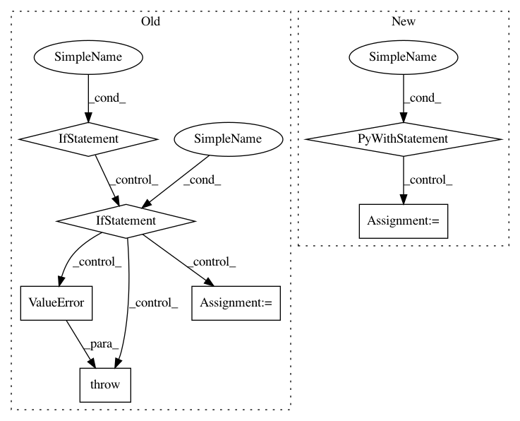

ec60b6d78f0fc423a8158d9f42210b878a8bcf0e,src/gensim/corpora/svmlightcorpus.py,SvmLightCorpus,__iter__,#SvmLightCorpus#,58
Before Change
for lineNo, line in enumerate(open(self.fname)):
line = line[: line.find("//")].strip()
if not line:
continue // ignore comments and empty lines
parts = line.split()
if not parts:
raise ValueError("invalid format at line no. %i in %s" %
(lineNo, self.fname))
target, fields = parts[0], [part.rsplit(":", 1) for part in parts[1:]]
doc = [(int(p1) - 1, float(p2)) for p1, p2 in fields if p1 != "qid"] // ignore "qid" features, convert 1-based feature ids to 0-based
yield doc
After Change
Iterate over the corpus, returning one sparse vector at a time.
self.streamposition = 0
with open(self.fname) as fin:
for lineNo, line in enumerate(fin):
doc = self.line2doc(line)
if doc is not None:
yield doc
self.streamposition += len(line)
def line2doc(self, line):
line = line[: line.find("//")].strip()
if not line:
return None // ignore comments and empty lines
In pattern: SUPERPATTERN
Frequency: 3
Non-data size: 7
Instances
Project Name: RaRe-Technologies/gensim
Commit Name: ec60b6d78f0fc423a8158d9f42210b878a8bcf0e
Time: 2011-02-16
Author: radimrehurek@seznam.cz
File Name: src/gensim/corpora/svmlightcorpus.py
Class Name: SvmLightCorpus
Method Name: __iter__
Project Name: craffel/mir_eval
Commit Name: cb786bb07f23af7792f05a940a50da08ee11d406
Time: 2016-07-15
Author: brian.mcfee@nyu.edu
File Name: mir_eval/io.py
Class Name:
Method Name: load_patterns
Project Name: deepchem/deepchem
Commit Name: c96af58e6ab2f85626e51a331e8479da49329f0e
Time: 2017-01-18
Author: joegomes@stanford.edu
File Name: deepchem/models/tensorflow_models/__init__.py
Class Name: TensorflowClassifier
Method Name: predict_proba_on_batch